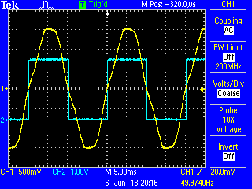
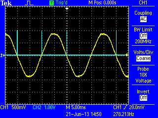
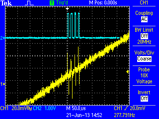
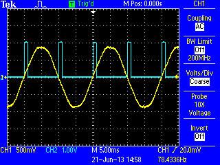

It occurred to me while looking for a method of measuring frequency for this thread that the analogue comparator in the ATmega would make a very good zero crossing detector for the voltage input on the emonTx. This would be very useful in many applications.
The 2 inputs for the comparator are connected to pins 12 and 13 and as these pins aren’t used on the emonTx it would be a simple matter to connect them across R14, the a/c input. Perhaps a thought for any future versions of the PCB?
I just tried this with nothing more than this for a sketch...
void loop()
{
digitalWrite(9,bitRead(ACSR,ACO));
}
And this is what I get on pin 9, the LED pin....

Re: Using the ATmega analogue comparator for zero crossing detection
Couldn't the same thing be done by just connecting the 9VAC from the mains adapter via a high resistor value (2M2) to any pin with interrupt functionality? The internal diodes would clamp the pin voltage to VCC and GND.
Re: Using the ATmega analogue comparator for zero crossing detection
Well I suppose you could but it won't be anywhere near as accurate. The thresholds for the digital input will vary with temperature etc. and there will be an offset between the rising and falling detection due to the different high and low thresholds. You might get some phase shift too with that high a resistance and the intrinsic capacitance.
Re: Using the ATmega analogue comparator for zero crossing detection
See EmonLibPro it does all that http://openenergymonitor.org/emon/node/2406
Re: Using the ATmega analogue comparator for zero crossing detection
Martin,
phase shift or (very slow) temperature variations would not matter so much for frequency measurements. But your solution is much better as it gives very exact zero crossing detection (and it does not need additional hardware). Very nice.
See EmonLibPro it does all that http://openenergymonitor.org/emon/node/2406
Hardware ZCD? No.
Re: Using the ATmega analogue comparator for zero crossing detection
Ok you'r right, not hardware implemented.
Anyway i've looked at that possibility and my conclusion is that Analog compare cant be used because when you switch to ADC read , first read is not precise. So you end up loosing sample rate for the samples that must be discharged.
A different approuch might be signal an int on pin change. That requires hardware to give a pulse for each zero cross.
The implementation is different for the application. Why you want zero detector cross in first place?
Re: Using the ATmega analogue comparator for zero crossing detection
Anyway i've looked at that possibility and my conclusion is that Analog compare cant be used because when you switch to ADC read , first read is not precise. So you end up loosing sample rate for the samples that must be discharged.
If you connect the AIN0/AIN1 pins as I suggested above then the analogue comparator is completely independent of the ADC and will have no affect on ADC read.
Re: Using the ATmega analogue comparator for zero crossing detection
MartinR, that's why i asked what is the application. If we're talking different hardware than our usual adc pins there are other possibilities.
What do you want to do with it and why you need zero cross detection.
Re: Using the ATmega analogue comparator for zero crossing detection
Most of the emonTx applications require zero crossing detection in some form and a good clean hardware detected signal is much nicer to use than the vagaries of detecting it via the analogue inputs. Since there's a free, unused comparator with unused external pins I was just suggesting that it might be sensible to hook these pins up on future versions of the PCB.
Re: Using the ATmega analogue comparator for zero crossing detection
MartinR,
I've converted my shield to input voltage reading by connecting a wire from ADC0 to AIN1 and C10+ to AIN0.
Objective is to flag a variable on zero cross moment only using interrupts.
But i'm getting false zero cross detections, maybe due to noise, i dont know.
As I have no scope here. Can you please test it and post scope image of pin 9 and voltage?
Test sketch as follow:
boolean FlagZeroDetec;
void setup() {
// Analog Comparator
DIDR1 = 0b00000011; // AIN1D..AIN0D: AIN1, AIN0 Digital Input Disable, saves power
ACSR = (0<<ACD) | // Analog Comparator: Enabled
(0<<ACBG) | // Analog Comparator Bandgap Select: AIN0 is the positive input of comparator
(0<<ACO) | // Analog Comparator Output: Off
(1UL<<ACI)| // Analog Comparator Interrupt Flag : Clear Pending Interrupt
(1UL<<ACIE)| // Analog Comparator Interrupt Enable
//(1UL<<ACIC)| // Analog Comparator Input Capture Enable on Timer/Counter1
(0UL<<ACIS1)| // --- Comparator Interrupt on Output Toggle.
(0UL<<ACIS0); // -/
}
ISR(ANALOG_COMP_vect)
{
FlagZeroDetec=true;
}
void loop()
{
if(FlagZeroDetec == true) {
digitalWrite(9,1);
FlagZeroDetec = false;
}
digitalWrite(9,0);
}
Re: Using the ATmega analogue comparator for zero crossing detection
chaveiro,
I tried your sketch for you. I had to add pinMode(9,OUTPUT); to setup, but apart from that it ran ok.
At first sight it looks fine..
.
.. but if you look in more detail you can see that there are multiple interrupts around the zero crossings...

I think turning the LED on and off generates enough of a noise spike to toggle the analogue comparator due to the very low hysteresis of the device. What you need to do is provide a guard band to prevent interrupts for a time after a crossing is detected.
Just for a quick test, I did this...
ISR(ANALOG_COMP_vect)
{
FlagZeroDetec=true;
bitClear(ACSR,ACIE); // added by MR
}
void loop()
{
if(FlagZeroDetec == true) {
digitalWrite(9,1);
FlagZeroDetec = false;
delay(1); // added by MR
bitSet(ACSR,ACIE); // added by MR
}
digitalWrite(9,0);
}
and this gives a nice clean 1ms pulse at each crossing...

you'll probably want to do something that doesn't waste a millisecond in the real code.
Hope this helps,
Martin
Re: Using the ATmega analogue comparator for zero crossing detection
Thanks, MartinR.
That is what i suspected. Will do the code later.
Re: Using the ATmega analogue comparator for zero crossing detection
Some conclusions:
Currently i have no scope to monitor real data, but by creating a debug output for analog zero cross i'm having an up to 1ms window of random false zero crosses detection with analog comparator connected as specified on first post.
That is unacceptable and creates worst performance than my soft pll solution.
Bellow is the regular EmonLibPro implementing zerocross with analog comparator only to flag the orange graph. I expected a spike where blue line (V) crosses zero but the orange data is unstable and cant be used as would create noise.
Maybe the noise is coming from 2.5V mid point of shield voltage divider.
Anyone has some advices how to reduce noise, or sugestions?
Re: Using the ATmega analogue comparator for zero crossing detection
Does the noise go away if you don't turn a LED on at the zero crossing?
You could try lowering the impedance of the mid-rail with an op-amp.
On an unrelated topic, is your green trace above really apparent power? It looks more like real power to me.
Re: Using the ATmega analogue comparator for zero crossing detection
How are you powering your board? If it's via USB from a PC then you will have lots of noise on the 5V line which is directly connected to AVCC and therefore will also appear on AREF. The emonTx is much better in this respect as the 3.3V regulator decouples AVCC from the PC noise to a large extent, but still picks up local digital noise. The best solution is to isolate AVCC and properly decouple it from VCC but that requires cutting tracks on the board.
If you are really seeing zero crossings that far before the actual crossing then you must have an awful lot of noise.
The high mid-rail impedance is actually an advantage in terms of noise from the power supply since it helps the capacitor filter out the spikes. Putting a 100nF ceramic capacitor in parallel with the electrolytic may help with high frequency noise spikes.
Re: Using the ATmega analogue comparator for zero crossing detection
The best solution is to isolate AVCC and properly decouple it from VCC but that requires cutting tracks on the board.
Or investing in a Leonardo. That seems to be one of the few Arduino designs that does include the LC filter on AVCC.
Re: Using the ATmega analogue comparator for zero crossing detection
Strangely the noise goes down if i increase the ADC frequency to 250kHz (reduce prescaler from 128 to 64) with loss of one lsb bit on adc precision. So much of the noise is coming from ADC conversions in progress.
Will investigate further but if this zero cross detection via adc can be made to work reliabily, i'd like to invite who is developping the new EmonTX shield to take the new requirements in consideration for the benefit of the community.
Re: Using the ATmega analogue comparator for zero crossing detection
dBC, green is active or real power, thanks for pointing that!
Re: Using the ATmega analogue comparator for zero crossing detection
if i increase the ADC frequency to 250kHz (reduce prescaler from 128 to 64) with loss of one lsb bit on adc precision
I haven't seen any evidence of loss of precision when running at 250kHz. Until you sort your noise issue out you can't really make any assumptions about precision.
Re: Using the ATmega analogue comparator for zero crossing detection
I have just tried additional smoothing/decoupling on the 3.3 V rail of a standard emonTx. With a 100 µF aluminium electrolytic in the holes intended for the battery connection, the reported "current" due to noise fell to around 25% of the usual value.
Re: Using the ATmega analogue comparator for zero crossing detection
That sounds like a simple, worthwhile mod then Robert. What "current" are you seeing with the capacitor added? You might find it reduces even further if you use a tantalum capacitor due to their better hf response.
I did some experiments with an emonGLCD because I wanted to build a standalone power meter by adding a daughter board with the input circuitry. The initial current due to noise was much worse than the emonTx, about 750mA, but I eventually managed to get it down to around 50mA.
These false power and current readings due to noise are the weakest part of this project so another pass on the PCBs to minimise their effect would be well worth the effort.
Re: Using the ATmega analogue comparator for zero crossing detection
I did try a 2200 pF polystyrene in parallel, but there was no discernible difference. I also found that running off the USB socket on my laptop PSU in parallel with the programmer (also powered by the laptop originally from the same PSU!) made a significant improvement. I need to send the same data by radio so that I can bypass the programmer and laptop, then I can give some hopefully more meaningful figures for various modes of powering the emonTx..
Re: Using the ATmega analogue comparator for zero crossing detection
I haven't seen any evidence of loss of precision when running at 250kHz. Until you sort your noise issue out you can't really make any assumptions about precision.
MartinR, That info cames from Atmel datasheet. We can also see some flutuations on the voltage graph (that is expected to be stable) given by realtime cycle data in the visualizer with higher adc frequency.
Re: Using the ATmega analogue comparator for zero crossing detection
AVR120 states:
"The recommended maximum ADC clock frequency is limited by the internal DAC in the conversion circuitry. For optimum performance, the ADC clock should not exceed 200 kHz. However, frequencies up to 1 MHz do not reduce the ADC resolution significantly."
It's quite a leap from that to your statement that running at 250kHz results in the loss of one lsb of precision. As I said, I don't think you can trust your graphs until you sort your noise issue out.
Re: Using the ATmega analogue comparator for zero crossing detection
MartinR, AVR120 sentence is rather generic, the specific atmega328 datasheet states: "If a lower resolution than 10 bits is needed, the input clock frequency to the ADC can be higher than 200kHz to get a higher sample rate."
Lower than 10bits, excludes LSB's.
We have no argument to use faster adc clock (out of spec for desired resolution) if it decreases resolution and gives no benefit in code performance.
I agree, we must reduce noise. However with a slower adc clock, noise is much more averaged (filtered out) by having a longer time window of internal adc samples during conversion.
To reduce noise to be in spec, we have to do a. and b. hardware changes stated on the datasheet, plus add a capacitor on AREF to GND :
24.6.2 Analog Noise Canceling Techniques
Digital circuitry inside and outside the device generates EMI which might affect the accuracy of analog measurements.
If conversion accuracy is critical, the noise level can be reduced by applying the following techniques:
a. Keep analog signal paths as short as possible. Make sure analog tracks run over the analog ground
plane, and keep them well away from high-speed switching digital tracks.
b. The AVCC pin on the device should be connected to the digital VCC supply voltage via an LC network.
c. Use the ADC noise canceler function to reduce induced noise from the CPU. (Cant be done, we cant put cpu to sleep as we need cpu processing power to do calculations)
d. If any ADC [3:0] port pins are used as digital outputs, it is essential that these do not switch while a conversion
is in progress. (Already done in code)
Re: Using the ATmega analogue comparator for zero crossing detection
plus add a capacitor on AREF to GND
I think the emontx already has that.
Re: Using the ATmega analogue comparator for zero crossing detection
( c)... "Cant be done, we cant put cpu to sleep as we need cpu processing power to do calculations)"
Really? Table 9.1 and sections 9.3 & 9.4 of the data sheet seem to suggest that Idle Mode and ADC Noise Reduction Mode can be used and the processor woken by ADC completion. Of course, chaveiro your interrupt library will not work in those circumstances, which might be what you mean by "can't be done".
Re: Using the ATmega analogue comparator for zero crossing detection
I've tested the sleep adc noise reduction technique. The problems i encountered was reduced time to do calculations. So reduced sampling rate.
Next there was other unexpected problem, follow adc read after sleep is garbage. So ended up with a much slower sample rate, more than 2x less by having to discharge half the samples reads.
It was a no go for me.
Re: Using the ATmega analogue comparator for zero crossing detection
chaveiro wrote: "Lower than 10bits, excludes LSB's."
It simply isn't that black and white. We are dealing with analogue quantities and probabilities here. You won't suddenly lose an LSB when you exceed 200kHz. What will happen is that there will be a gradual increase in the typical error as the frequency rises.
The ATmega328 data sheet states that the typical error is 2 LSBs at 200kHz and 4.5 LSBs at 1MHz. I doubt this is a linear relationship but assuming it roughly is then the 50kHz step from 200 to 250kHz would increase the typical error by about 0.16 LSBs, or 0.8mV for a 5V emonTx shield. This will be insignificant compared to the noise on AREF.
I also don't agree that there is no code benefit. Apart from the obvious advantage of being able to double the sampling rate it also puts the current and voltage samples closer together. We correct this phase error by linear interpolation and the error in this approximation increases with the time between samples. I haven't checked but instinctively I would predict that this reduction in error is greater than the increase due to the higher clock frequency.
Re: Using the ATmega analogue comparator for zero crossing detection
Martin,
You make logic, and i agree to some point. I rather prefer to be working with adc clocks specified by atmel.
By the way i'm doing 120 (can go to 150 if disable the pll) adc samples per cycle with 125kHz adc clock (in spec).
If your code need fast adc clock, then maybe the code needs some optimization for speed or not having to wait for adc readings to complete. Interrupts can do it.
In the end error in adc might not be significant due to other noises problems, but if you can sort that out in first instance, then don't need to worry with it by the time other noise issues are fixed.
On topic:
Regular arduino's (even leonardo) will always have major potential source of analogic noise per design. Eg.: due to expansion ports requirement, absence of analog ground planes, 'long' tracks for travel of analog signals, etc.
This leaves us with the need to design a pcb with a local atmel (smd is better) carefully designed with all that requirements in mind.
I've post some inquires on other post about it but i saw many different requirements from different users and no real conscience of what benefit an integrated and stackable solution that out outputs digital i2c data could give. The anti-aliasing filter may improve a litle also.
On the other side, a dedicated power meter ic from analog or others manufactures would solve all the issues as well.
So my conclusion is that for the hobby user we get a cheap and reasonable precise energy monitor solution with arduino that fits most scenarios. Can we do better? - Yes. But does it worth it?...
Re: Using the ATmega analogue comparator for zero crossing detection
chaveiro
You wrote to Martin: "If your code need fast adc clock, then maybe the code needs some optimization for speed or not having to wait for adc readings to complete. Interrupts can do it."
You really ought to do your research before you make comments like that. You have only yourself to blame if Martin gets angry at you.